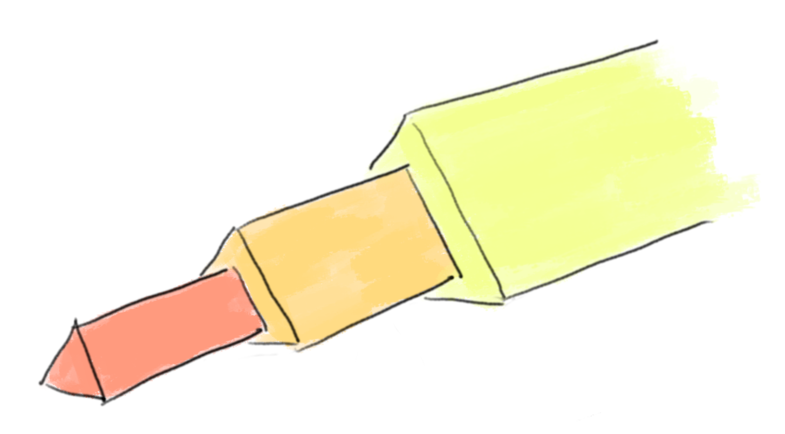
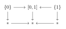

Earlier this year I wanted to quickly learn the basics of homotopy limits, and found it surprisingly hard to even find a clear definition. Resources vary a lot in the level of generality, the amount of prerequisite knowledge required and the exact technical details, and it took a long time to find the right fit for me at a point when I didn’t know what I was looking for. In this post I’ll give a brief explanation of what homotopy limits are, and point to the further resources that I found most helpful.

What’s the point of homotopy limits?
In homotopy theory, we like to consider topological spaces “up to homotopy equivalence”. In calculations, we want to be able to replace a space with a homotopy equivalent space. Unfortunately the usual category-theoretic notions of limit and colimit don’t behave nicely with respect to homotopy equivalence. For example, the pullback of the diagram given by the inclusions of the endpoints in the unit interval
\[\{0\} \hookrightarrow [0, 1] \hookleftarrow \{1\}\]
is the empty topological space. The pullback of the diagram given by two inclusions of a point into a point
\[\ast \hookrightarrow \ast \hookleftarrow \ast\]
is a point. But the interval is homotopy equivalent to the point – in fact we have a commutative diagram

where all the vertical maps are homotopy equivalences. Since the empty space is not homotopy equivalent (nor even weakly homotopy equivalent) to a point, we see that the limits of two homotopy equivalent diagrams are not necessarily homotopy equivalent.
Homotopy limits and colimits fix this problem, at the expense of no longer satisfying the universal property of a limit (they do in fact satisfy a weaker “homotopy universal property”, but this is quite subtle to state precisely). Given a diagram \[B \xrightarrow{f} A \xleftarrow{g} C \text{,}\] the pullback is the space \[\{(b, c) \in B \times C \mid f(b) = g(c) \} \text{,}\] topologised as a subspace of \(B \times C\). The homotopy pullback can be defined as the space \[\{(b, c, \gamma) \in B \times C \times A^{[0, 1]} \mid f(b) = \gamma(0), g(c) = \gamma(1)\} \text{,}\] topologised as a subspace of \(B \times C \times A^{[0, 1]}\), where \(A^{[0, 1]}\) is the space of paths in \(A\) with the compact-open topology. That is, a point in the homotopy pullback corresponds to a point \(b \in B\), a point \(c \in C\), and a path in \(A\) from \(f(b)\) to \(g(c)\). The rough idea is that the equality constraint \(f(b) = g(c)\) in the definition of pullback is badly behaved with respect to homotopy equivalence, so in the homotopy pullback we replace this with the data of a path from \(f(b)\) to \(g(c)\).
In our examples above, we can compute that the homotopy pullback of \(\ast \hookrightarrow \ast \hookleftarrow \ast\) is still a single point, while the homotopy pullback of \(\{0\} \hookrightarrow [0, 1] \hookleftarrow \{1\}\) is the space of paths from \(0\) to \(1\) in \([0, 1]\), which is homotopic to a point.
Key properties
The general construction of homotopy limits and colimits is a bit complicated, so it helps to start with some important properties. The following list comes from Pascal Lambrecht’s A Gentle Introduction on Homotopy Limits and Colimits.
Given a diagram category \(I\), a homotopy limit functor \(\text{holim} : \text{Top}^I \to \text{Top}\) should satisfy:
- Homotopy limits are invariant with respect to weak homotopy equivalence. That is, if we have two diagrams \(\mathbb{D}_1 : I \to \text{Top}\) and \(\mathbb{D}_2 : I \to \text{Top}\), and a natural transformation \(\alpha : \mathbb{D}_1 \to \mathbb{D}_2\) such that \(\alpha(i)\) is a weak homotopy equivalence for every object \(i \in I\), then \(\text{holim}\, \alpha : \text{holim}\, \mathbb{D}_1 \to \text{holim}\, \mathbb{D}_2\) is also a weak homotopy equivalence.
- We have a natural transformation \(\eta : \text{lim}\, \to \text{holim}\,\). That is, for each diagram \(\mathbb{D} : I \to \text{Top}\) there is a continuous map \(\eta_{\mathbb{D}} : \text{lim}\, \mathbb{D} \to \text{holim}\, \mathbb{D}\), and these maps are natural in \(\mathbb{D}\).
- There is a class \(\mathcal{F}\) of diagrams, called the fibrant diagrams, with the following two properties. If \(\mathbb{F} \in \mathcal{F}\) is a fibrant diagram then \(\eta_{\mathbb{F}} : \text{lim}\, \mathbb{F} \to \text{holim}\, \mathbb{F}\) is a weak homotopy equivalence. And \(\mathcal{F}\) is large in the sense that given any diagram \(\mathbb{D}\), there is a fibrant diagram \(\mathbb{F}\) and a natural transformation \(\alpha : \mathbb{D} \to \mathbb{F}\) such that \(\alpha(i)\) is a weak homotopy equivalence for all \(i \in I\) (we say that \(\mathbb{F}\) is a fibrant replacement for \(\mathbb{D}\)).
There is a dual set of properties for a homotopy colimit functor \(\text{hocolim} : \text{Top}^I \to \text{Top}\).
Confusions and subtleties
So far we’ve seen some useful properties, but to really use homotopy limits we’ll need to have an actual definition. However when you go further into the specifics there are some subtleties to watch out for, and a lot of different possible approaches. My aim is to outline these so that you might be better prepared than I was.
Different concrete constructions
There are several widely used constructions of homotopy limits, and different choices will work best in different circumstances. Some of these constructions only agree up to homotopy equivalence (rather than homeomorphism), so they aren’t completely interchangeable – it really is important to keep track of which you’re using. The constructions I understand the best are the Bousfield-Kan formula and simplicial replacement, but there are also several different approaches using model categories.
Ambient category
Homotopy theorists often work in a “convenient category of topological spaces” – a subcategory of the category of all topological spaces, which has better categorical properties. A common choice is the category of compactly generated weak Hausdorff spaces (there’s a nice overview in this paper by Neil Strickland), but unfortunately people often use slight variations. In practice I don’t think these differences tend to matter for the theory of homotopy limits, but as someone who likes to keep track of technical details I’m not quite sure how best to deal with this situation. In principal you might need to do a lot of double checking if you want to use a result in a slightly different category.
Another possibility is to work in a much more general setting, such as a simplicial model category. Again most of the theory is the same in this setting, but there are a few differences: some results can be slightly strengthened or simplified when you restrict to topological spaces. In particular there are some cases where in the general setting you need to work with (co)fibrant replacements, but this is unnecessary for topological spaces.
Homotopy equivalence vs weak homotopy equivalence
Many people work exclusively with weak homotopy equivalences, and this fits best with more general settings. However many theorems do turn out to be true when you replace “weak homotopy equivalence” with “homotopy equivalence” in the statement, and you’ll sometimes see these variants.
Resources
In the future I might explain more about homotopy limits and colimits here on my blog, but for the time being here are some links to resources that I found useful:
A Gentle Introduction on Homotopy Limits and Colimits (Pascal Lambrecht)
This is a great first introduction. He starts with motivation and key properties, in more detail than I’ve described here, then explains the Bousfield-Kan construction. This requires understanding some more advanced theory (the nerve of a category), so he also describes the Dror-Farjoun approach, which is more accessible. The last section gives explicit descriptions for homotopy limits and colimits of common shapes (pullbacks, pushouts, towers, cubes, …), which is very useful.
A Primer on Homotopy Colimits (Daniel Dugger)
Another good introduction, and the motivation and intuition from the first couple sections are excellent. He takes the simplicial replacement approach, and the arguments are somewhat more technical. He gives more proofs, and the later chapters go into some more advanced topics. If you enjoy abstraction then I highly recommend the later chapters on the two-sided bar construction.
Homotopy limits, completions and localizations (A. K. Bousfield, D. M. Kan)
This is (as far as I know) the first description of homotopy limits in the literature. Unsurprisingly it describes the Bousfield-Kan approach!
The book discusses homotopy limits in Part II, which does not depend in any way on Part I. Despite its age it is still a good resource, although less beginner-friendly than the above sources.
Conclusion
I personally have much more to learn about homotopy limits and colimits, in particular the more abstract model-category approach, and I hope to write more about this later. In the mean time I’d welcome any suggestions, comments or corrections.